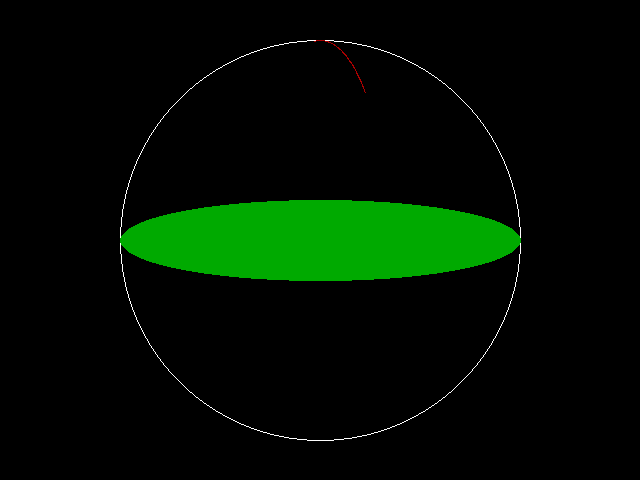

Help Center›FreeBASIC
Circlekeyword
Graphics statement to draw an ellipse or a circle
Syntax
Circle [target,] [STEP] (x,y), radius[, [color][, [start][, [end][, [aspect][, F]]]]]Parameters
| Name | Description | |
|---|---|---|
target | optional; specifies the image buffer to draw onSTEPindicates that coordinates are relative (x, y)coordinates of the center of the ellipse | |
radius | the radius of the circle - or for an ellipse, the semi-major axis (i.e. the longest radius) | |
color | the color attribute | |
start | starting angle | |
end | ending angle | |
aspect | aspect ratio of the ellipse, the ratio of the height to the widthFfill mode indicator |
Description
Circle will draw a circle, ellipse, or arc based on the parameters given to it. target specifies a buffer to draw on. target may be an image created with ImageCreate or Get (Graphics). If omitted, target defaults to the screen's current work page. (See ScreenSet)The center of the shape will be placed on the destination surface at
(x, y). Radius denotes the radius of the shape. If aspect ratio is not 1.0, the biggest radius must be given here.Color denotes the color attribute, which is mode specific (see Color and Screen (Graphics) for details). If omitted, the current foreground color as set by the Color statement is used.The
Step option specifies that x and y are offsets relative to the current graphics cursor position.start and end are angles are in radians. These can range -2*PI to 2*PI, where PI is the constant π, approximately 3.141593; if you specify a negative angle, its value is changed sign and a line is drawn from the center up to that point in the arc. end angle can be less than start. If you do not specify start and end, a full circle/ellipse is drawn; if you you specify start but not end, end is assumed to be 2*PI; if you specify end but not start, start is assumed to be 0.0.aspect is the aspect ratio, or the ratio of the y radius over the x radius. If omitted, the default for ScreenRes modes is 1.0, while for Screen (Graphics) modes the default value is the value required to draw a perfect circle on the screen, keeping the pixel aspect ratio in mind. This value can be calculated as follows:ratio = (y_radius / x_radius) * pixel_aspect_ratiowhere
pixel_aspect_ratio is the ratio of the current mode width over the current mode height, assuming a 4:3 standard monitor. If aspect ratio is less than 1.0, radius is the x radius; if aspect is more or equal to 1.0, radius is the y radius.F is the fill flag. If you specify this flag, the circle/ellipse will be filled with the selected color. This only takes effect if you are drawing a full circle/ellipse.Custom coordinates system set up by
Window and/or View (Graphics) affect the drawing operation; clipping set by View also applies. When Circle finishes drawing, the current graphics cursor position is set to the supplied center.Note: Curves drawn with
Circle can induce pixels overdrawn at some locations. Thus, the resultant (blended) color of these overdrawn pixels is affected if a transparent color (in conjunction with the GFX_ALPHA_PRIMITIVES option flag) is used.Remarks
Differences from QB
-
targetis new to FreeBASIC
- The FreeBASIC implementation uses a different algorithm for ellipse/arc drawing than QB, so the result may not be equal to QB for every pixel.
- The
Fflag to draw filled circles/ellipses is new to FreeBASIC.
See also
Example
' Set 640x480 mode, 256 colors
Screen 18
' Draws a circle in the center
Circle (320, 240), 200, 15
' Draws a filled ellipse
Circle (320, 240), 200, 2, , , 0.2, F
' Draws a small arc
Circle (320, 240), 200, 4, 0.83, 1.67, 3
Sleep

Reference
- Documented in KeyPgCircle.html